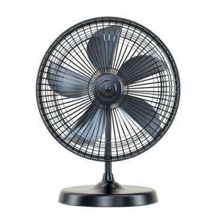

[Sistem Konveyor Sortir Otomatis]
[2025] · [Proyek kuliah / tim 3 orang]

Masalah: [Apa yang ingin diselesaikan, mis. memilah barang berdasarkan jenis secara otomatis.]
Peran & solusi: [Apa yang kamu kerjakan, mis. merancang wiring, memprogram ladder, membuat tampilan HMI.]
Hasil: [Angka atau bukti, mis. akurasi sortir 95%, dokumentasi lengkap.]
lihat dokumentasi lengkap ↗